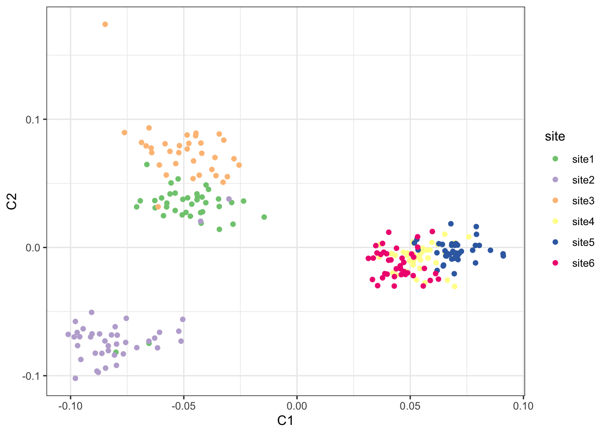
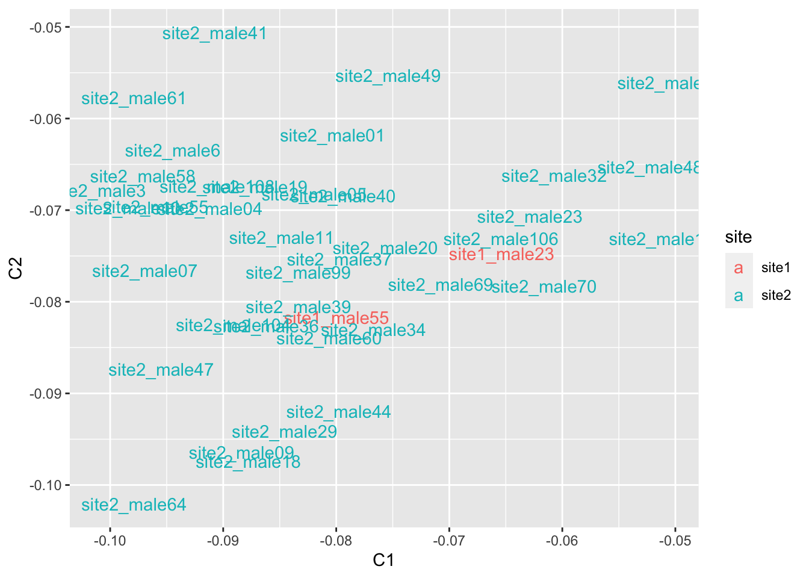
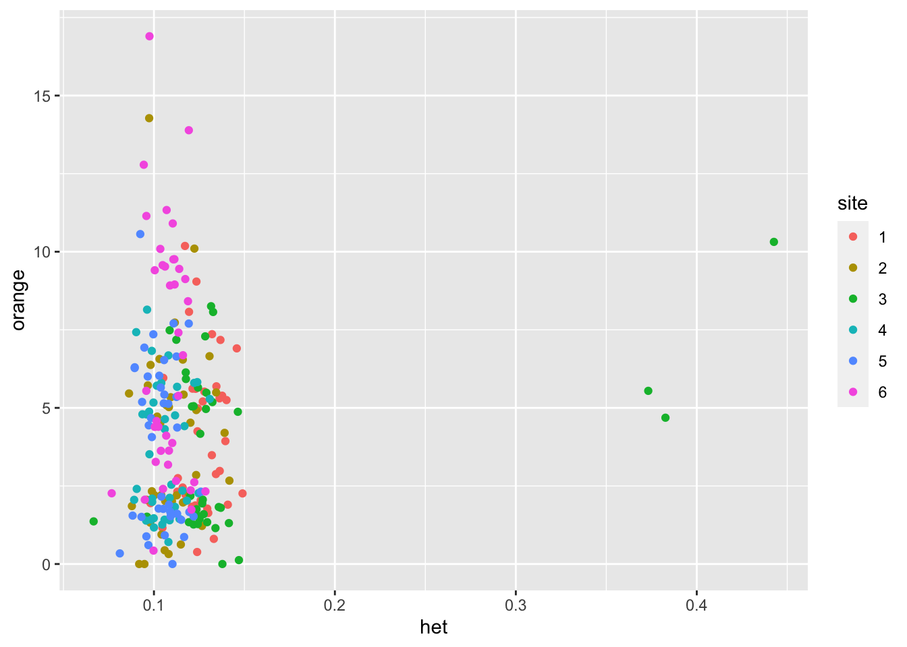
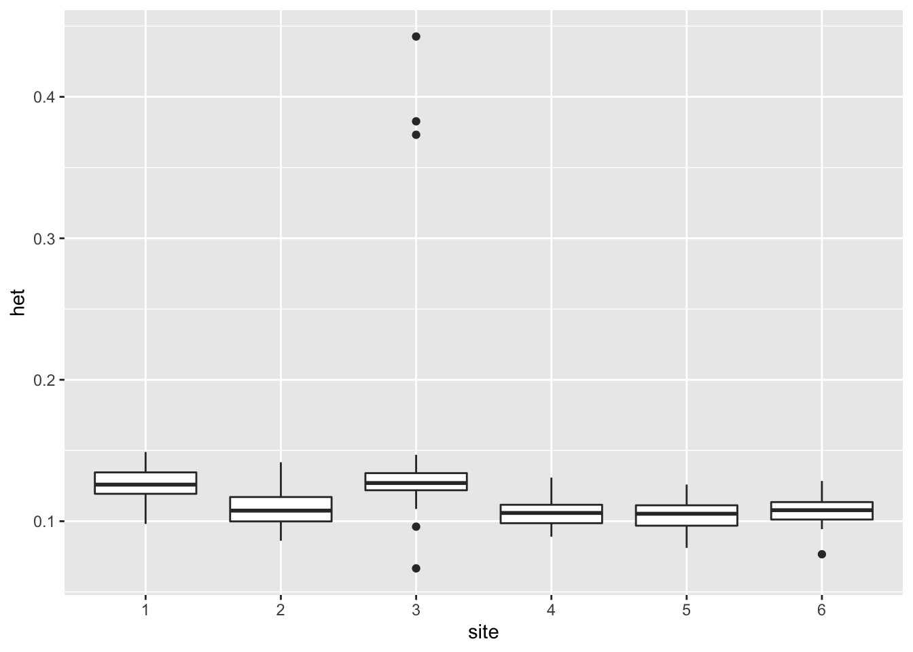
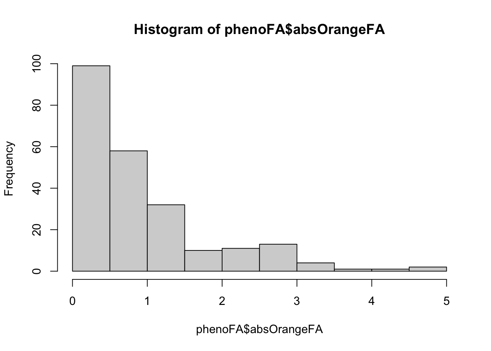
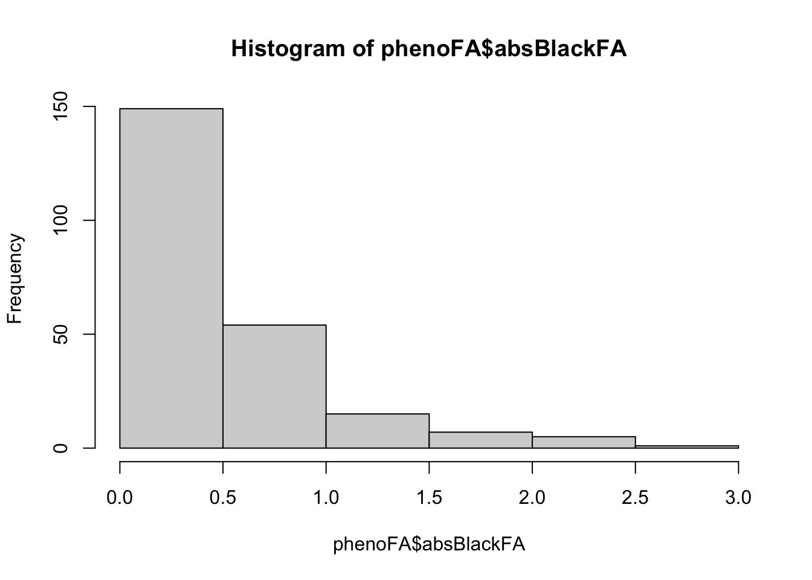

Last updated: 2020-12-30
Checks: 7 0
Knit directory: guppies/
This reproducible R Markdown analysis was created with workflowr (version 1.6.2). The Checks tab describes the reproducibility checks that were applied when the results were created. The Past versions tab lists the development history.
Great! Since the R Markdown file has been committed to the Git repository, you know the exact version of the code that produced these results.
Great job! The global environment was empty. Objects defined in the global environment can affect the analysis in your R Markdown file in unknown ways. For reproduciblity it’s best to always run the code in an empty environment.
The command set.seed(20201229) was run prior to running the code in the R Markdown file. Setting a seed ensures that any results that rely on randomness, e.g. subsampling or permutations, are reproducible.
Great job! Recording the operating system, R version, and package versions is critical for reproducibility.
Nice! There were no cached chunks for this analysis, so you can be confident that you successfully produced the results during this run.
Great job! Using relative paths to the files within your workflowr project makes it easier to run your code on other machines.
Great! You are using Git for version control. Tracking code development and connecting the code version to the results is critical for reproducibility.
The results in this page were generated with repository version 3e0e3de. See the Past versions tab to see a history of the changes made to the R Markdown and HTML files.
Note that you need to be careful to ensure that all relevant files for the analysis have been committed to Git prior to generating the results (you can use wflow_publish or wflow_git_commit). workflowr only checks the R Markdown file, but you know if there are other scripts or data files that it depends on. Below is the status of the Git repository when the results were generated:
Ignored files:
Ignored: .Rhistory
Ignored: .Rproj.user/
Ignored: guppies_cache/
Ignored: guppies_files/
Ignored: index_files/
Note that any generated files, e.g. HTML, png, CSS, etc., are not included in this status report because it is ok for generated content to have uncommitted changes.
There are no past versions. Publish this analysis with wflow_publish() to start tracking its development.
mds <- read_table("data/all.mds") %>%
separate(FID, c("site", "ind"), extra = "merge") %>%
select(site, id = IID, C1, C2)
── Column specification ────────────────────────────────────────────────────────
cols(
FID = col_character(),
IID = col_character(),
SOL = col_double(),
C1 = col_double(),
C2 = col_double()
)ggplot(mds, aes(C1, C2, color = site, label = id)) +
geom_point() +
scale_color_brewer(type = "qual") +
theme_bw()
mds %>% filter(C1 < -0.05 & C2 < -0.05) %>%
ggplot(aes(C1,C2,label=id, color=site)) +
geom_text()
Looks like there are site1_male23 and site1_male55 individuals may have been switched, and we’ll drop them just in case
filtered using vcftools --mac 10 --max-missing 0.5 --minQ 20 --minDP 6
pheno <- read_tsv("data/guppy pheno.tsv", col_types = cols()) %>%
filter(!Label %in% c("site1_male23", "site1_male55") & TopBottom != "0") %>%
mutate(orange = rowMeans(cbind(L_Orangearea, R_Orangearea), na.rm = T), site = factor(Site)) %>%
select(site, Label, orange, TopBottom) %>%
left_join(read_csv("data/geno2pheno.csv", col_types = cols()), by = c("Label" = "pheno")) %>%
left_join(read_tsv("data/out.het", col_types = cols()) %>%
mutate(het = 1 - `O(HOM)` / N_SITES) %>%
select(gen = INDV, het, F, nsites = N_SITES)) %>%
na.omit()Joining, by = "gen"ggplot(pheno, aes(het, orange, color = site)) +
geom_point()
with(pheno, cor.test(F, het))
Pearson's product-moment correlation
data: F and het
t = -293.28, df = 230, p-value < 2.2e-16
alternative hypothesis: true correlation is not equal to 0
95 percent confidence interval:
-0.9989700 -0.9982715
sample estimates:
cor
-0.9986657 ggplot(pheno, aes(site, het)) +
geom_boxplot()
pheno_mod <- glm(het ~ TopBottom * site, data = pheno)
summary(pheno_mod)
Call:
glm(formula = het ~ TopBottom * site, data = pheno)
Deviance Residuals:
Min 1Q Median 3Q Max
-0.062244 -0.008519 -0.000852 0.007046 0.271708
Coefficients:
Estimate Std. Error t value Pr(>|t|)
(Intercept) 0.1240998 0.0072615 17.090 < 2e-16 ***
TopBottomT 0.0045362 0.0104110 0.436 0.66347
site2 -0.0160900 0.0101402 -1.587 0.11400
site3 0.0003222 0.0102694 0.031 0.97500
site4 -0.0185139 0.0101402 -1.826 0.06924 .
site5 -0.0176923 0.0102694 -1.723 0.08633 .
site6 -0.0164959 0.0101402 -1.627 0.10521
TopBottomT:site2 -0.0011464 0.0144422 -0.079 0.93680
TopBottomT:site3 0.0419726 0.0147234 2.851 0.00478 **
TopBottomT:site4 -0.0041558 0.0145332 -0.286 0.77519
TopBottomT:site5 -0.0085989 0.0144509 -0.595 0.55243
TopBottomT:site6 -0.0047125 0.0145332 -0.324 0.74605
---
Signif. codes: 0 '***' 0.001 '**' 0.01 '*' 0.05 '.' 0.1 ' ' 1
(Dispersion parameter for gaussian family taken to be 0.001001871)
Null deviance: 0.29442 on 231 degrees of freedom
Residual deviance: 0.22041 on 220 degrees of freedom
AIC: -930.1
Number of Fisher Scoring iterations: 2Anova(pheno_mod)Analysis of Deviance Table (Type II tests)
Response: het
LR Chisq Df Pr(>Chisq)
TopBottom 3.759 1 0.052511 .
site 53.800 5 2.304e-10 ***
TopBottom:site 16.668 5 0.005175 **
---
Signif. codes: 0 '***' 0.001 '**' 0.01 '*' 0.05 '.' 0.1 ' ' 1It appears that the effect of heterozygosity is site-specific. It is strongest in the site with the most variability in heterozygosite (Site 3)
phenoFA <- read_tsv("data/guppy pheno.tsv", col_types = cols()) %>%
filter(!Label %in% c("site1_male23", "site1_male55") & TopBottom != "0") %>%
mutate(blackFA = L_Blackarea - R_Blackarea, orangeFA = L_Orangearea - R_Orangearea, site = factor(Site)) %>%
select(site, Label, blackFA, orangeFA, TopBottom) %>%
left_join(read_csv("data/geno2pheno.csv", col_types = cols()), by = c("Label" = "pheno")) %>%
left_join(read_tsv("data/out.het", col_types = cols()) %>% mutate(het = 1 - `O(HOM)` / N_SITES) %>% select(gen = INDV, het, F, nsites = N_SITES)) %>%
na.omit() %>%
group_by(site) %>%
transmute(het = het, absOrangeFA = abs(orangeFA), meanSite = mean(het), withinSite = het - meanSite, absBlackFA = abs(blackFA)) %>%
ungroup()Joining, by = "gen"hist(phenoFA$absOrangeFA)
hist(phenoFA$absBlackFA)
modelFA.sameSlopes <- glmer(round(absOrangeFA) ~ het + meanSite + (1 | site), data = phenoFA, family = poisson) # https://www.statalist.org/forums/forum/general-stata-discussion/general/1443819-dependent-variable-in-absolute-values
summary(modelFA.sameSlopes)Generalized linear mixed model fit by maximum likelihood (Laplace
Approximation) [glmerMod]
Family: poisson ( log )
Formula: round(absOrangeFA) ~ het + meanSite + (1 | site)
Data: phenoFA
AIC BIC logLik deviance df.resid
580.3 594.0 -286.1 572.3 227
Scaled residuals:
Min 1Q Median 3Q Max
-1.0928 -0.8900 -0.1392 0.3308 3.5957
Random effects:
Groups Name Variance Std.Dev.
site (Intercept) 0.03393 0.1842
Number of obs: 231, groups: site, 6
Fixed effects:
Estimate Std. Error z value Pr(>|z|)
(Intercept) 0.9883 0.8328 1.187 0.235
het 2.0864 2.0450 1.020 0.308
meanSite -12.0387 7.6158 -1.581 0.114
Correlation of Fixed Effects:
(Intr) het
het 0.084
meanSite -0.954 -0.354modelFA.sameSlopes <- glmer(round(absBlackFA) ~ het + meanSite + (1 | site), data = phenoFA, family = poisson) # https://www.statalist.org/forums/forum/general-stata-discussion/general/1443819-dependent-variable-in-absolute-valuesboundary (singular) fit: see ?isSingularsummary(modelFA.sameSlopes)Generalized linear mixed model fit by maximum likelihood (Laplace
Approximation) [glmerMod]
Family: poisson ( log )
Formula: round(absBlackFA) ~ het + meanSite + (1 | site)
Data: phenoFA
AIC BIC logLik deviance df.resid
387.6 401.4 -189.8 379.6 227
Scaled residuals:
Min 1Q Median 3Q Max
-0.6743 -0.6642 -0.6187 0.8283 3.8135
Random effects:
Groups Name Variance Std.Dev.
site (Intercept) 0 0
Number of obs: 231, groups: site, 6
Fixed effects:
Estimate Std. Error z value Pr(>|z|)
(Intercept) -0.003366 0.834484 -0.004 0.997
het 0.291858 3.407391 0.086 0.932
meanSite -7.860321 8.031126 -0.979 0.328
Correlation of Fixed Effects:
(Intr) het
het 0.016
meanSite -0.898 -0.439
optimizer (Nelder_Mead) convergence code: 0 (OK)
boundary (singular) fit: see ?isSingular
sessionInfo()R version 4.0.3 (2020-10-10)
Platform: x86_64-apple-darwin17.0 (64-bit)
Running under: macOS Big Sur 10.16
Matrix products: default
BLAS: /Library/Frameworks/R.framework/Versions/4.0/Resources/lib/libRblas.dylib
LAPACK: /Library/Frameworks/R.framework/Versions/4.0/Resources/lib/libRlapack.dylib
locale:
[1] en_US.UTF-8/en_US.UTF-8/en_US.UTF-8/C/en_US.UTF-8/en_US.UTF-8
attached base packages:
[1] stats graphics grDevices utils datasets methods base
other attached packages:
[1] car_3.0-10 carData_3.0-4 forcats_0.5.0 stringr_1.4.0
[5] dplyr_1.0.2 purrr_0.3.4 readr_1.4.0 tidyr_1.1.2
[9] tibble_3.0.4 ggplot2_3.3.2 tidyverse_1.3.0 lmerTest_3.1-3
[13] lme4_1.1-26 Matrix_1.2-18 workflowr_1.6.2
loaded via a namespace (and not attached):
[1] httr_1.4.2 jsonlite_1.7.2 splines_4.0.3
[4] modelr_0.1.8 assertthat_0.2.1 statmod_1.4.35
[7] cellranger_1.1.0 yaml_2.2.1 numDeriv_2016.8-1.1
[10] pillar_1.4.7 backports_1.2.1 lattice_0.20-41
[13] glue_1.4.2 digest_0.6.27 RColorBrewer_1.1-2
[16] promises_1.1.1 rvest_0.3.6 minqa_1.2.4
[19] colorspace_2.0-0 htmltools_0.5.0 httpuv_1.5.4
[22] pkgconfig_2.0.3 broom_0.7.3 haven_2.3.1
[25] scales_1.1.1 openxlsx_4.2.3 later_1.1.0.1
[28] rio_0.5.16 git2r_0.27.1 farver_2.0.3
[31] generics_0.1.0 ellipsis_0.3.1 withr_2.3.0
[34] cli_2.2.0 magrittr_2.0.1 crayon_1.3.4
[37] readxl_1.3.1 evaluate_0.14 ps_1.5.0
[40] fs_1.5.0 fansi_0.4.1 nlme_3.1-149
[43] MASS_7.3-53 xml2_1.3.2 foreign_0.8-80
[46] tools_4.0.3 data.table_1.13.4 hms_0.5.3
[49] lifecycle_0.2.0 munsell_0.5.0 reprex_0.3.0
[52] zip_2.1.1 compiler_4.0.3 rlang_0.4.9
[55] grid_4.0.3 nloptr_1.2.2.2 rstudioapi_0.13
[58] labeling_0.4.2 rmarkdown_2.6 boot_1.3-25
[61] gtable_0.3.0 abind_1.4-5 DBI_1.1.0
[64] curl_4.3 R6_2.5.0 lubridate_1.7.9.2
[67] knitr_1.30 rprojroot_2.0.2 stringi_1.5.3
[70] Rcpp_1.0.5 vctrs_0.3.6 dbplyr_2.0.0
[73] tidyselect_1.1.0 xfun_0.19